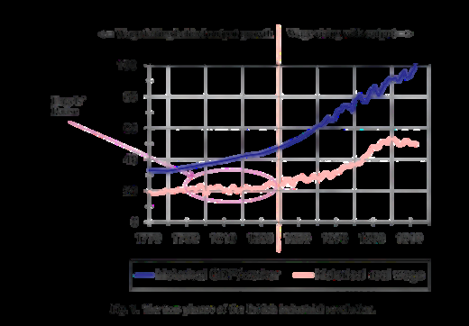
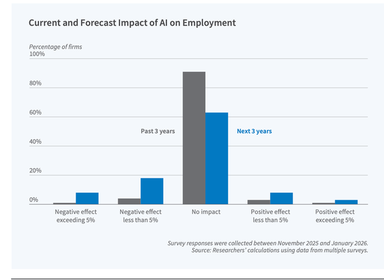

The history of capitalism has been shaped by technological revolutions that fundamentally transformed production, labor, and social organization. When many people view artificial intelligence as "the next industrial revolution," they are making a crucial economic and historical parallel. AI agents may indeed become the defining productive force of the twenty-first century. But what actually is an AI agent, and why does the distinction matter? A standard chatbot that answers a question is just a tool. But an AI agent is something completely different: it is a system that completes a multi-step workflow without someone directing each move. This is not simply a powerful new machine like the steam engine; it functions more like a young colleague who never sleeps, never asks for a wage increase, and never complains.
Historical Precedent: From Steam to Electricity to Digital
The First Industrial Revolution began in late eighteenth-century Britain; its economic effect was a sharp rise in productive capacity, sparking modern economic growth. This created the beginning of modern economic growth. However, the benefits were unevenly distributed. As Nicholas Crafts notes, broad productivity gains were gradual and did not immediately improve living standards. Instead, workers faced displacement and stagnant pay during a period known as "Engels' Pause," where economic output grew much faster than real wages. Socially, this era accelerated urbanization, decimated traditional crafts, and cemented the power of industrial capital over labor.

From an economic perspective, new technologies reduce transaction costs, lower coordination costs inside firms, and compress decision-making time. However, even though today AI agents resemble earlier industrial revolutions in their productivity-enhancing potential, they differ in a crucial respect: instead of primarily transforming physical labor, they increasingly automate cognitive labor and decision-making, creating new questions about inequality, labor power, and institutional adaptation. The historical experience of Engels' Pause is particularly relevant to contemporary debates on artificial intelligence. Just as early mechanization initially generated productivity gains without proportionate wage growth, AI may also produce short-run asymmetries between output growth and labor market gains.
Instead of primarily transforming physical labor, AI increasingly automates cognitive labor and decision-making.
The Second Industrial Revolution, beginning in the late nineteenth century, was driven primarily by electricity. Unlike the first industrial era, it transformed not only production machinery but the organization of industrial systems themselves, resulting in mass production, falling unit costs, and rising long-run productivity. Socially, this period produced more stable wage growth. Labor unions expanded, welfare institutions gradually developed, and a broader middle class emerged. The gains were not equally distributed, but they were shared more broadly than during the early steam age.
The Third Industrial Revolution, beginning in the late twentieth century, centered on computers, telecommunications, and the internet, shifting capitalism toward information processing and services. It increased efficiency in communication, logistics, and finance while enabling global production networks. Yet the social effects were more complex. Digitalization favored workers with higher education and analytical skills, contributing to skill-biased technological change and wage polarization.
Building on this new digital infrastructure, the early twenty-first century introduced the Fourth Industrial Revolution (Industry 4.0). Unlike the Third Revolution, which introduced basic digitalization, Industry 4.0 merges technologies that blur the physical and digital spheres through cyber-physical systems, IoT, and big data analytics across value chains. This phase effectively created the major interconnected networks and infinitely flowing data necessary for advanced automation. Yet, while Industry 4.0 creates the important base for massive connectivity and data collection, today's transition to AI agents represents the next evolution. It changes the entire game beyond connected systems toward autonomous, cognitive decision-making, setting the dawn of a new era.
From this historical perspective, Crafts argues that AI may become historically significant not merely because it automates tasks, but because it can increase the productivity of research and knowledge creation itself. However, while AI agents are a completely new invention and represent the next revolutionary transformation, they also differ from previous industrial revolutions in many ways. AI agents are now automating something that no previous technology touched at scale: cognitive judgment under uncertainty. Legal investigation, medical examination, code review, financial analysis—these are the jobs that, until very recently, the economic literature treated as the safe zone that new inventions could not touch.
Why Organizational Change Is Systemic, Not Modular
Exactly because that supposedly untouchable "safe zone" has been violated, viewing the revolution that AI agents will bring about merely in terms of "which tasks will disappear" is an overly narrow approach. In fact, the issue is not a shift in tasks, but a systemic crisis. As Agrawal and colleagues emphasize, just as the steam engine required railroads or electricity necessitated newly designed factories, AI agents also demand their own "coinvention": to the profits, the complete redesign of the decision-making system from the bottom up. It is important to remember that no business operates in an isolated bubble. Companies are tightly interconnected, living systems and do not function in a strictly "modular" manner.
Therefore, when an AI agent takes over, the change does not end at that desk. The unwritten rules, flexibility, and internal office dialogues among people are replaced by cold, algorithmic processes triggered instantly. This inevitably transforms all roles tied to that decision and ultimately the entire organizational hierarchy from the bottom up.
The Speed and Scale of AI Adoption
Another characteristic of the evolution of technological revolutions is the issue of speed. Bick, Blandin, and Deming show that by late 2024, nearly 40% of U.S. working-age adults were already using generative AI, with 23% of employed workers having used it on the job in the previous week. For context: the personal computer took three years from its first mass-market launch to reach 25% workplace adoption. ChatGPT was roughly at that level two years after release. Every prior industrial revolution evolved slowly enough that labor markets, educational systems, and many areas had time, usually decades, to adapt. With AI revolutions, that buffer is gone.
This disappearing buffer is clearly reflected in how firms are actually experiencing AI today versus what they are preparing for tomorrow. A recent multi-country survey of nearly 6,000 executives reveals that while roughly 70% of firms have already adopted AI, the immediate structural effects have been deceptively quiet. As the figure below illustrates, more than 90% of executives report that AI had no effect on employment over the past three years. However, this initial period of harmless experimentation is ending.

When forecasting the next three years, executives anticipate a significant shift. They expect AI to increase labor productivity by 1.4% on average while reducing employment by 0.7%, with about two-thirds of this workforce reduction anticipated to happen quietly through reduced hiring rather than direct layoffs. Another key point is that expectations regarding the new economy seem to change depending on the audience. The same study shows that while U.S. managers expect a 1.2% decline in employment, employees themselves have very different expectations and predict that AI will increase employment in their companies by approximately 0.5%.
This deep asymmetry in expectations fully highlights why AI agents represent not merely a shift in jobs, but a systemic transformation. This situation challenges us to face the fundamental issue of the AI revolution.
Control, Institutions, and the Question of Outcomes
Yet, beyond the immediate threat to bargaining power, there is an even deeper crisis growing at the very heart of workflow. As Acemoglu sharply reminds us, the harms associated with this shift are not technological inevitabilities, but rather the direct result of who holds the reins of control. Ultimately, whether this AI trajectory leads us toward shared prosperity or deeper polarization is still an open question.
But if history teaches us anything, it is that technologies never dictate their own social outcomes: society and institutions do. The steam engine did not generously hand us labor laws; people had to fight for them, painfully. Historically, each industrial revolution increased productive capacity, but each also generated social conflict before institutions adapted. Like other revolutionary periods, AI agents also fit this historical pattern, yet they may exceed it because of their speed, scale, and low marginal replication cost.
But the differences are sharp. AI agents are the first technology in history to automate cognitive judgment under uncertainty at scale, not just physical effort, context-sensitive decision-making that has always been the core of professional and knowledge work. Therefore, the political economy of AI agents is not simply "who gets the productivity gains?" It is also "who controls the judgment?" History does not tell us how to answer that question. But it does tell us that the answer will not be determined by the technology itself. It will be determined by the choices we make while the technology is still in its early phases, which is exactly where we are now.
Selected references
- Acemoglu, D. (2021). Harms of AI. NBER Working Paper No. 29247.
- Agrawal, A., Gans, J. S., & Goldfarb, A. (2023). Similarities and differences in the adoption of general purpose technologies. NBER Working Paper No. 30976.
- Bick, A., Blandin, A., & Deming, D. J. (2024). The rapid adoption of generative AI. NBER Working Paper No. 32966.
- Crafts, N. (2021). Artificial intelligence as a general-purpose technology: An historical perspective. Oxford Review of Economic Policy, 37(3), 521–536.
- Schwab, K. (2017). The Fourth Industrial Revolution. Crown Business.
- Yotzov, I., Barrero, J. M., Bloom, N., Bunn, P., Davis, S. J., Foster, K. M., & Wang, B. Z. (2026). Firm Data on AI. NBER Working Paper No. 34836.